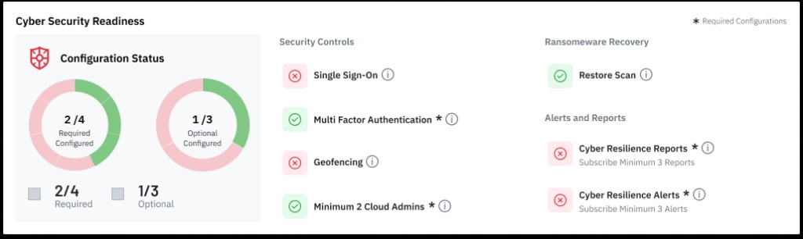
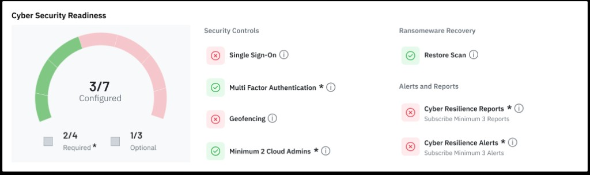
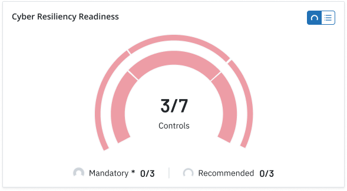
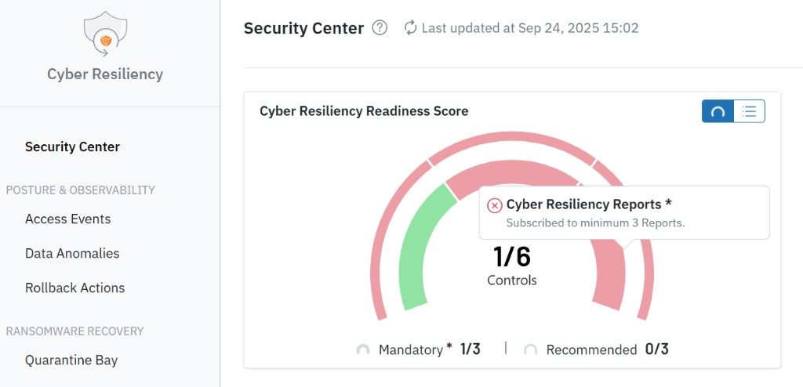
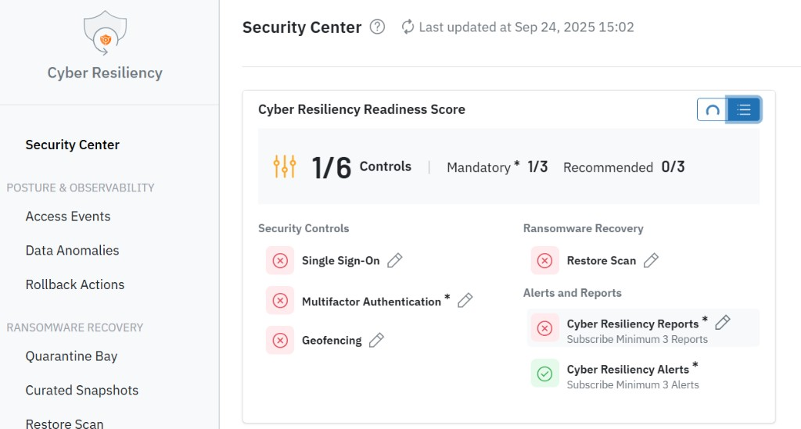

Case Study · Druva
Six settings scattered.
One readiness score.
Designing the Cyber Resiliency Readiness Score — a unified widget inside Druva's Security Center that tells Cloud Administrators whether baseline controls are actually configured, and routes them to fix what's missing without hunting across six separate settings pages.
Target Persona
Meet Jordan — Cloud Administrator
Jordan manages the security posture of their organization's Druva tenant as one part of a broader backup/IT admin role — not as a dedicated security specialist. Jordan is periodically accountable to an internal compliance/InfoSec team for proving baseline controls (like MFA) are actually enabled, not just assumed.
Every time Jordan opens the Security Center, they are asking three things:
- Is my environment actually protected right now?
- Did anything suspicious happen since I last checked?
- What's the fastest thing I can fix to reduce risk today?
Step 01 / Problem & Context
Six settings, six pages, no single view
The Problem: Administrators had to navigate to six different pages across the platform to configure baseline security controls (MFA, SSO, Geofencing, etc.).
The Impact: High friction led to missed settings, leaving organizations vulnerable and failing compliance audits.
The Hypothesis: Consolidating these scattered actions into a single widget will eliminate navigation fatigue, provide instant risk visibility, and increase security adoption.
Step 02 / Page Architecture
Finding a home for the Readiness Score
The existing Security Center dashboard already answered:
- "Did anything suspicious happen?" (Threat Summary, New Location Events)
- "Is my backup infrastructure failing?" (Backup Risks, Access Risks)
But it lacked a macro view of the organization's proactive security posture.
The missing piece
We needed a new widget in the top-left anchor position to answer one critical new question: "What is the fastest thing I can fix to reduce risk today?"
The challenge
Visually differentiating between Mandatory (audit-blocking) and Recommended (risk-reducing) controls, without fighting the rest of the dashboard for visual dominance.
Step 03 / Iteration & Failure
Evolving the Readiness widget
The core tension running through every iteration: Mandatory and Recommended controls cannot have equal visual weight. Mandatory settings are audit-blocking; Recommended settings reduce risk but won't fail a compliance review. Every design pass was judged against whether that distinction stayed visible at a glance.
Iteration 1 — Side-by-side split donut charts

Two separate donut charts — one for Required (Mandatory) and one for Optional (Recommended) — each with its own checklist column.
What went wrong: Placing two identical donut charts side-by-side visually implied that Recommended controls held equal operational importance to Mandatory controls.Iteration 2 — Single arc gauge with side-by-side breakdown

Single arc showing total configured controls alongside a static breakdown list — Jordan could see every control status at once.
What went wrong: Used equal arc segments for all controls, completely obscuring the mandatory audit distinction. Mandatory items relied solely on an asterisk (*).Iteration 3 — Concentric dual-arc gauge visual

Nested arcs — an inner thick arc for Mandatory, and an outer thin arc for Recommended — designed to visually anchor score weight and make audit-blocking gaps readable without opening a list.
What went wrong as standalone: Adding the full list alongside the double ring in a four-panel grid overwhelmed the card layout with visual density.Step 04 / The Shipped Solution
Nested concentric gauge + Gauge/List toggle + direct edit affordances
The shipped widget resolves the core tension: the inner arc tracks Mandatory progress, while the outer arc tracks Recommended progress. A Gauge/List toggle lets Jordan switch between a macro compliance view and a granular action list.


Control breakdown
Mandatory *
Audit-blocking controls
- Multi-Factor Authentication
- Cyber Resiliency Reports (minimum 3 subscriptions)
- Cyber Resiliency Alerts (minimum 3 subscriptions)
Recommended
Risk-reducing controls
- Single Sign-On
- Geofencing
- Restore Scan
Key design decisions
01
Gauge / List toggle
Two mental modes: Scan the score at a glance (gauge) or act on a specific control (list).
02
In-context pop-ups
No more page hopping. Clicking the pencil icon opens the configuration in a local modal. Visual hierarchy win: The edit icon is permanently visible for unconfigured items, but tucks away on hover for completed ones to reduce clutter.
03
Page layout
Scan → Investigate → Act. The layout naturally guides the eye from macro readiness (top) down to granular threat hunting (bottom).
Outcomes & Reflection
Impact & takeaways
01 / Workflow impact
Fixing gaps without losing context
We turned a scattered, six-page hunt into a centralized widget. Because all setting adjustments now open in local pop-up modals, Cloud Admins can fix security gaps on the spot without ever leaving the Security Center dashboard.
02 / User impact
Instant risk visibility
We eliminated the guesswork. Instead of assuming their environment is secure, administrators can now see exactly what is misconfigured or missing at a single glance, turning abstract compliance rules into clear, immediate action items.
03 / Business value
Strengthened security posture
At its core, this widget drives adoption. By removing the friction of finding and fixing these settings, we encourage higher configuration rates. The more baseline controls an organization enables, the better and more resilient the security Druva can provide to its customers.
Product demo
See the Security Center in action
Druva's official walkthrough of the Security Center — real-time visibility into backup security risks, readiness scoring, and threat triage in one unified dashboard.
Watch product demo →